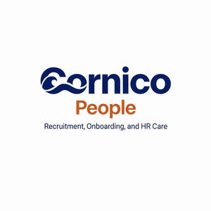

Trade Mark Journal No.2026/006 6 February 2026
UK00004327774 21 January 2026 (35)

- Class 35
- Consultancy of personnel recruitment; Personnel recruitment consultancy; Employment recruiting consultancy; Recruitment consultancy services; Business recruitment consultancy; Staff recruitment consultancy services; Executive recruitment services; Consultancy relating to personnel recruitment; Consultancy and advisory services relating to personnel recruitment; Recruitment services; Interviewing services [for personnel recruitment]; Employment recruiting consultation; Employment recruitment; Recruitment consultants in the financial services field; Employment consultancy; Professional recruitment services; Personnel management and employment consultancy; Staff recruitment services; Recruitment and personnel management services; Personnel recruitment advertising; Employment recruiting services; Employment counselling and consultancy services; Personnel recruitment services; Employment consultancy services; Personnel recruitment agency services; Personnel recruitment services and employment agencies; Career placement consulting services; Executive recruiting services; Employment staffing consultation services; Recruitment services for sales and marketing personnel; Personnel management consulting; Staff recruitment; Personnel recruitment; Recruitment (Personnel -); Recruitment of personnel; Recruitment and placement services; Recruitment advertising; Advisory services relating to personnel recruitment; Personnel consultancy; Recruitment of executive staff; Recruitment of high-level management personnel; Human resources management and recruitment services; Business consulting services; Career planning consultancy; Personnel management consultancy services; Personnel placement consultancy; Business consulting; Personnel management consultancy; Business management consultancy and advisory services; Management consultancy (Personnel -); Personnel placement and recruitment; Consulting services in business organization and management; Business organisation consulting; Advertising services relating to the recruitment of personnel; Office support staff recruitment services; Management advice relating to the recruitment of staff; Job placement consultancy; Recruitment of computer staff; Business consultancy and advisory services; Business management consultancy services; Consultancy and advisory services relating to personnel management; Consultancy and advisory services relating to personnel placement; Headhunting services; Business management organisation consultancy; Business consultancy services; Professional consultancy relating to personnel management; Business organisation and management consultancy in the field of personnel management; Recruitment of temporary personnel; Permanent staff recruitment.
Regan Day